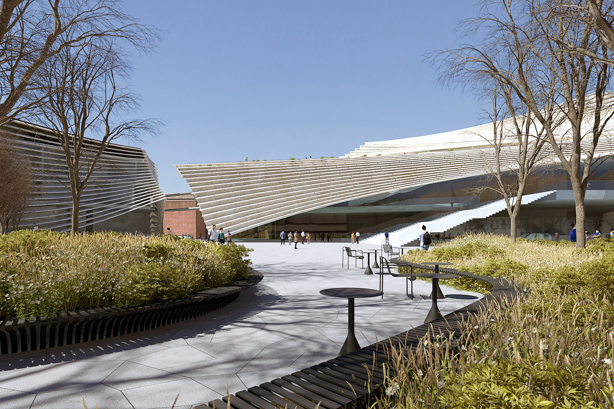
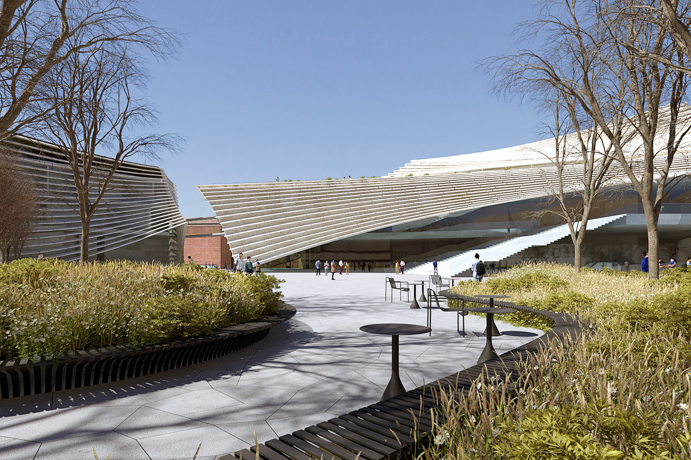
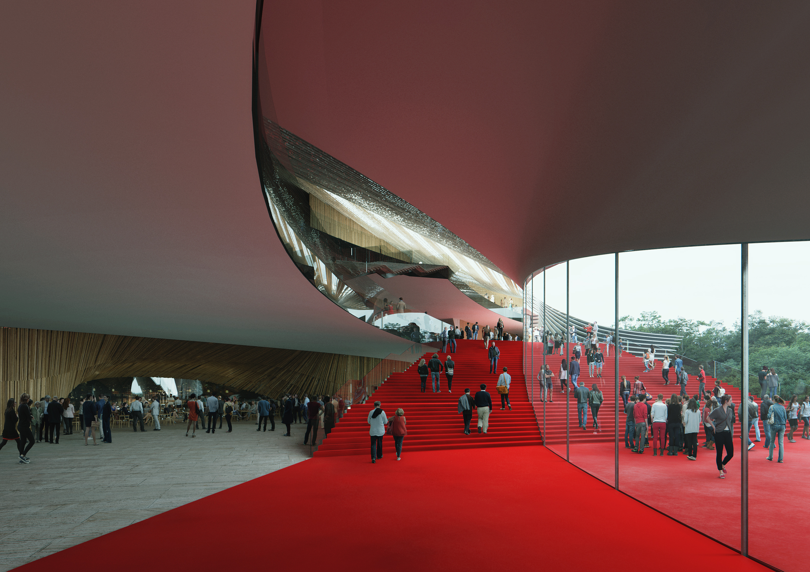
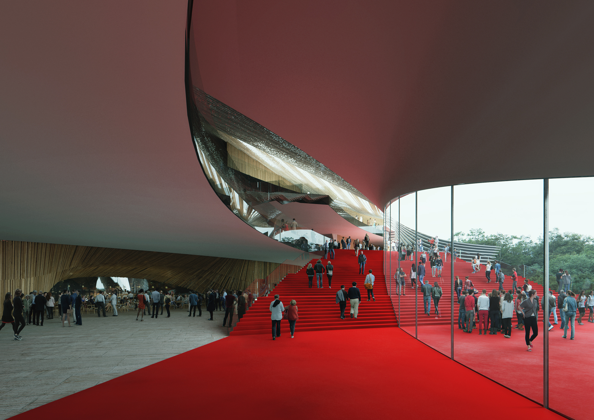
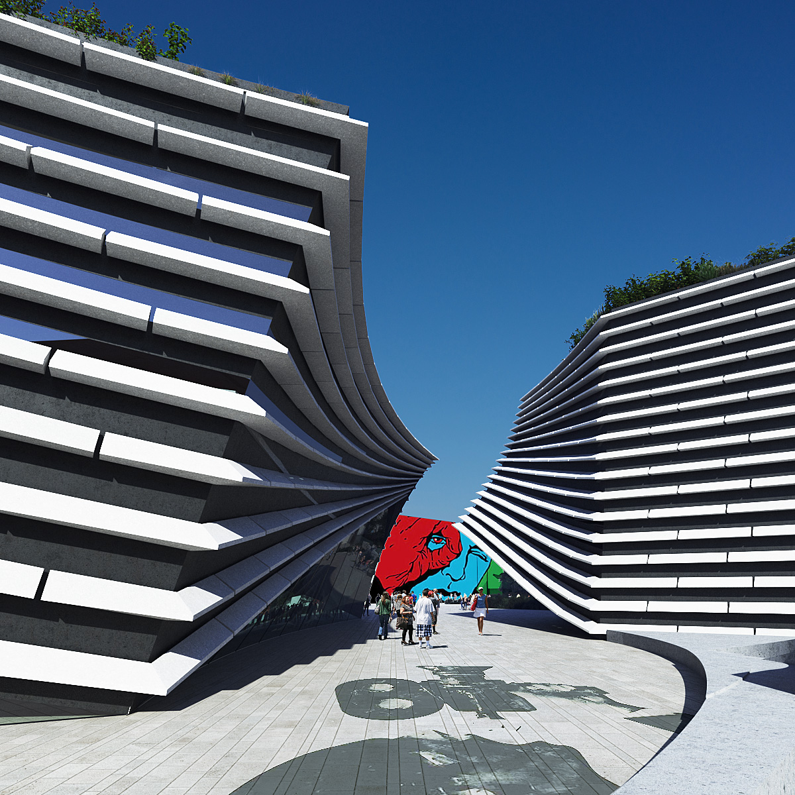
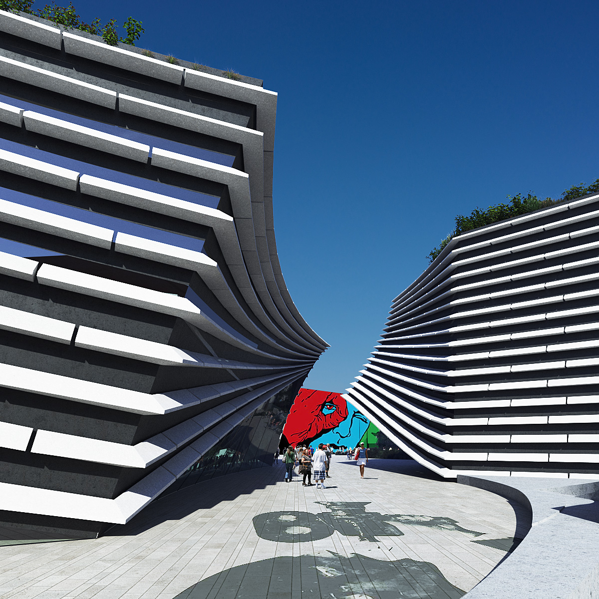

Project Name
Award: [Award Placeholder]
Publication: [Publication Placeholder]
Location: [Location Placeholder]
Program: [Program Placeholder]
Year: [Year Placeholder]
Team: [Team Placeholder]
Info: [Info Placeholder]
[Project description paragraph 1 placeholder]
[Project description paragraph 2 placeholder]
[Project description paragraph 3 placeholder]
[Project description paragraph 4 placeholder]
[Project description paragraph 5 placeholder]
[Project description paragraph 6 placeholder]
[Project description paragraph 7 placeholder]


 

 


 

Loading...